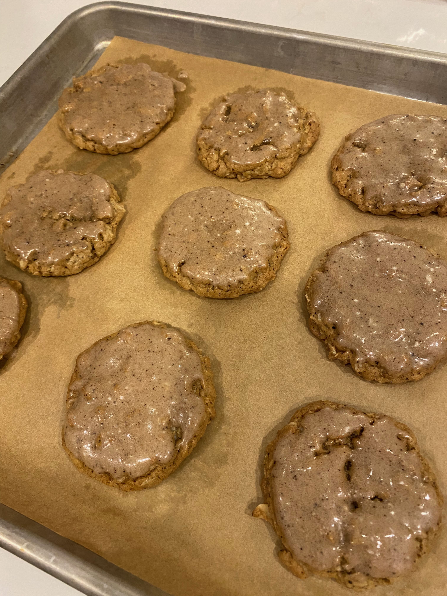

This recipe comes from ambitiouskitchen.com's recipe.
Brown Butter Espresso Cookies
These cookies are delicious and perfect for the fall weather! They're super chewy and the touch of espresso makes them irresistible.
Prep time
Cook time
Total time
1 hour
12 minutes
1 hour 12 minutes
Ingredients:
2 sticks (226g) of butter
1 tablespoon of brown butter gets reserved for the icing
1.5 cups (320 g) of brown sugar
2 large eggs (room temperature)
4 teaspoons vanilla extract
save 1 teaspoon for the icing
2 cups (240 g) all purpose flour
1.75 cups (158 g) old-fashioned rolled oats
1 teaspon baking soda
2 tablespoons espresso powder
use about 1 teaspoon for the icing
1/2 teaspoon cinnamon
1/4 teaspoon salt
1 cup (180 g) powdered sugar
2 tablespoons milk
Directions:
Melt the butter over medium heat. Once melted, whisk constantly: the butter will begin to turn an amber color and foam up. Once you smell a nutty aroma after 5-8 minutes, remove the butter from the heat and allow it to cool for 5-10 minutes.
Set aside 1 tablespoon of brown butter to use for the icing later.
Add the brown sugar to the bowl with the brown butter and mix until well combined. Add in your eggs and vanilla extract and once again mix until well combined. The mixture should resemble caramel.
In a separate bowl, whisk together your flour, oats, baking soda, espresso, cinammon, and salt.
Add your dry ingredients to your wet ingredients and mix until just combined.
Cover the dough with plastic wrap and let chill in the fridge for 30 minutes. In the meantime, preheat your oven to 350 degrees F and line a baking sheet with parchment paper.
Use a cookie scoop to grab around 1.5 tablespoons of dough at a time and place on your cookie sheet. Make sure to leave at least 2 inches between each dough ball.
Bake for 12 minutes or until slightly golden on the edges. Take the cookies out and let them cool for at least 5 minutes before transferring to a wire rack to cool completely.
Once the cookies are cool, prepare your icing: add the powdered sugar, espresso powder, vanilla extract, and milk to your reserved brown butter and mix until smooth.
If the icing is too thick, add a little milk to thin. If it's too thick, add a little bit of powdered sugar.
Lightly dip each cookie into the icing then return them to your wire rack to let the icing harden.